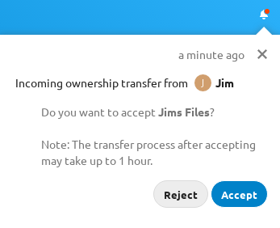

Users can transfer the ownership of files and folders to other users. Sharing
ownerships of those transferred files/folders will also be transferred.
Przejdź do Ustawienia > Osobiste > Udostępnianie > Pliki.
Kliknij Wybierz plik lub katalog do przeniesienia >> Otworzy się okno wyboru plików, pokazujące wszystkie pliki i katalogi na koncie użytkownika.
Wybierz plik lub katalog i kliknij Wybierz >> Zostanie wyświetlona wybrana nazwa pliku lub katalogu.
Kliknij Zmień w razie konieczności zmiany wyboru.
Wybierz nowego właściciela, wpisując jego nazwę w polu wyszukiwania obok Nowy właściciel.
Kliknij Przenieś.
Informacja
Automatyczne uzupełnianie lub wyświetlanie nazwy użytkownika może być ograniczone z powodu administracyjnej konfiguracji widoczności. Aby uzyskać szczegółowe informacje, zobacz dokumentację administratora.
Docelowy użytkownik otrzymuje powiadomienie, w którym jest pytany, czy zaakceptować lub odrzucić przychodzące przeniesienie.

Jeśli zostanie zaakceptowane, to docelowy użytkownik znajdzie przeniesione pliki i katalogi w swoim katalogu głównym w katalogu Przeniesiono z [użytkownik] w [data].
Użytkownik, który przenosi własność jest informowany o akceptacji lub odrzuceniu poprzez powiadomienie.